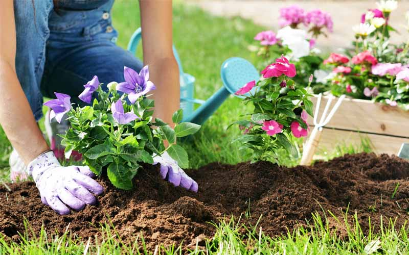

Happy Plants è un progetto dedicato a tutti gli amanti di giardinaggio, aiutandoli nella scoperta, nella cura e nella conoscenza delle piante. Questo sito è stato creato da quattro ragazzi per un progetto scolastico, i loro nomi sono Gabriele Ossola, Liguri Morgan, Luca Spoltori e Mattia Fornasiero.
